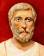
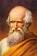

C'est l'un des Sept sages de la Grèce antique et le fondateur présumé de l'école milésienne. Philosophe de la nature, il passe pour avoir effectué un séjour en Égypte, où il aurait été initié aux sciences égyptienne et babylonienne. On lui attribue de nombreux exploits, comme le calcul de la hauteur de la grande pyramide ou la prédiction d'une éclipse, ainsi que le théorème de Thalès. Il fut l'auteur de nombreuses recherches mathématiques, notamment en géométrie.

Il n’a jamais rien écrit : même si on lui a attribué dès les IIe et IIIe siècles de notre ère un certain nombre d'ouvrage et si les soixante-et-onze lignes des Vers d’Or ont longtemps été considérées de sa main, il ne s'agit que d'apocryphes qui témoignent en revanche de l'extraordinaire légende qui s'est créée autour de son nom. Le néo-pythagorisme est néanmoins empreint d'une mystique des nombres qui était déjà présente dans la pensée de Pythagore.

Son ouvrage le plus célèbre, les Éléments, est un des plus anciens traités connus présentant de manière systématique, à partir d'axiomes et de postulats, un large ensemble de théorèmes accompagnés de leurs démonstrations. Il porte sur la géométrie, tant plane que solide, et l’arithmétique théorique.

Archimède est généralement considéré comme le plus grand mathématicien de l'Antiquité et l'un des plus grands de tous les temps. Il utilise la méthode d'exhaustion pour démontrer rigoureusement un certain nombre de théorèmes de géométrie, ce qui lui permet de calculer l'aire sous un arc de parabole avec la somme d'une série infinie ou de donner un encadrement de pi d'une remarquable précision. Il introduit également la spirale qui porte son nom, des formules pour les volumes des surfaces de révolution, et un système ingénieux pour l'expression de très grands nombres.

Il est particulièrement connu pour son évaluation de la circonférence de la Terre grâce à un calcul géométrique, fondé sur la longueur de l'ombre à midi le jour du solstice d'été en un endroit situé sur un méridien donné à une distance connue du Tropique du Cancer, où à cette heure précise, il n'y a aucune ombre, le Soleil se trouvant exactement à la verticale.